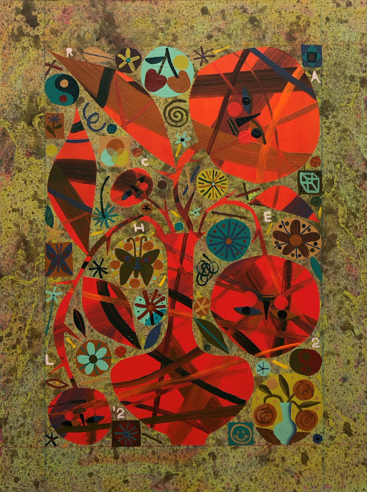

Four Thorny Red Roses
Rachel Hayden
Acrylic on Panel, Framed
16 x 12 in
About the Work :: “My recent paintings consist of the types of things I used to draw in the margins of my
notebooks in middle school. Butterflies, rainbows, shooting stars, caricature self-portraits, fruits
and flowers with human faces. The same motif images appear again and again like a cast recurring characters placed in different settings and situations. The process of painting involves intuitive, playful placement of objects, like arranging souvenirs on a shelf. Images are interlocked like pieces in a puzzle. Securely bound within the borders of the rectangular panel, barely-touching bits and pieces appear to float in midair on soft matte backgrounds. I approach painting with both intuition and organization in mind, allowing myself to make silly or childlike decisions while simultaneously prioritizing visual balance. The process is playful and additive, like decorating a cake, or furnishing a dollhouse. Anthropomorphized
fruits, flowers, and butterflies are positioned so their unmoving eyes tell the story.
In this body of work, bugs, fruits, and flower-figures grapple with certain hard-to-describe human feelings, relating to comfort, anxiety, love, and grief. Ambiguous emotions are manifested in glossy eyes and half-smiles. A moth seems content to be cradled between orchid blooms at midnight. In the morning, a rose with a knotted stem is crying just because she felt like crying, as the butterfly below avoids eye contact. At sunset, sweaty lemons pose impatiently in their bowl, stealing sideways glances and gritting their teeth. This work is inspired by big, heavy feelings and their mysterious origins—the sudden
pangs of anxiety the strike in childhood, as well as the moments of abundance and bliss.
Ultimately in these paintings I seek to find order in chaos, joy in mess, and humor in tragedy.”